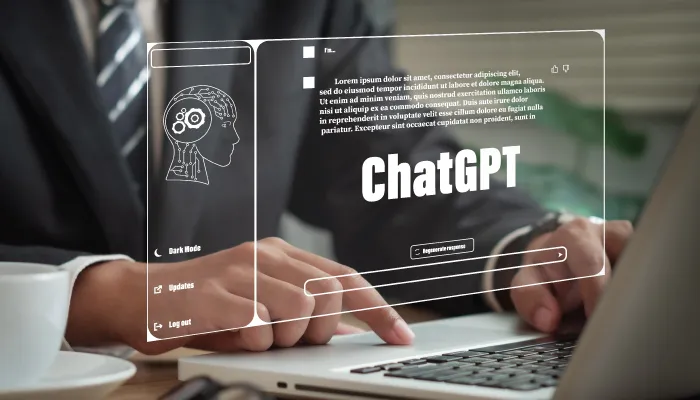

ChatGPT et les experts en cybersécurité: Menaces et opportunités
Chat GPT est un modèle de langage de grande envergure qui utilise l'apprentissage automatique pour générer du texte de manière autonome. Les récents développements dans cette technologie comprennent l'amélioration de la compréhension du langage naturel, la personnalisation des réponses et la capacité à comprendre les émotions.L'application de cette technologie dans divers domaines tels que l'éducation, la santé et les affaires est également en cours de développement. Cependant, il y a aussi des préoccupations concernant l'utilisation abusive de cette technologie, en particulier dans le contexte de la désinformation et de la manipulation en ligne.